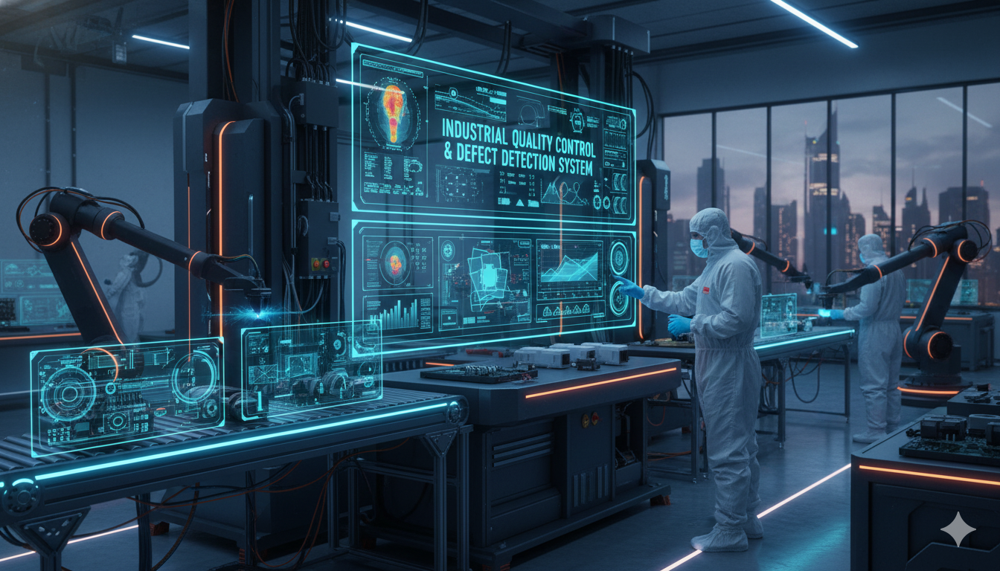

Featured Projects


Transforming complex data into intelligent solutions. Specialized in High-Performance Computing, PINNs, and Production AI.
Data Scientist & Machine Learning Specialist with 5+ years of experience analyzing complex, large-scale datasets. I hold a strong background in Applied Mathematics, currently researching Neural Networks for Fluid Simulation.
Beyond the code, I focus on bridging the gap between theoretical math and deployed software. I build systems that are not just accurate, but scalable and efficient on HPC infrastructure.
I'm currently looking for new opportunities in AI Engineering. Whether you have a question or just want to say hi, I'll try my best to get back to you!
Say Hello